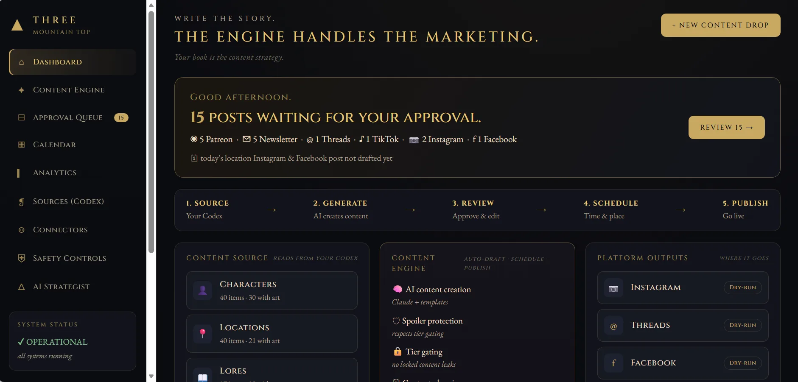

Inquiries and customer intake
Capture requests in one place, identify missing information, assign a next action and prepare responses for review. Customer messages stay within the permissions you approve.
I connect the work between your inbox, forms, calendar and customer records, so the next step does not depend on someone remembering it. You work directly with Frank Epps, the person building the system.
Serving the Atlanta metropolitan area. I visit clients at their businesses; remote work is also available.
For owner-operated businesses, service teams and entrepreneurs, the problem is often the gap between existing tools. The diagnosis determines whether a simple integration is enough or a custom system is justified.
Capture requests in one place, identify missing information, assign a next action and prepare responses for review. Customer messages stay within the permissions you approve.
Connect forms, calendars and customer records. Set reminders and make outstanding estimates, appointments and follow-ups visible to the person responsible.
Replace repeated spreadsheet copying with a dashboard or a repeatable report. Keep a record of where each number came from and flag missing or inconsistent data.
Draft, summarize, organize and research with AI grounded in approved information. Define what the system may do, what needs your approval, and how to stop it.
My AI Content Engine separates planning, drafting, independent checking and human approval before publishing. It demonstrates the same controls I can adapt to a business workflow. It is a personal build, not a claim about a client's results.

Actual interface from my own system. View more working systems and screenshots.
I do not promise a percentage saving before seeing the process. We establish a baseline, then compare the finished workflow against it.
Yes. I visit clients at their businesses across the Atlanta metropolitan area, by arrangement. Discovery, reviews and delivery can also happen remotely. Understudy is a service-area business, not a walk-in office.
Not necessarily. I inspect what you already use before proposing replacements. Sometimes connecting the existing tools is the right answer.
The first step is a $150 diagnostic, which you can book here and which is credited toward an agreed build. After inspecting the workflow and agreeing on scope, I send a separate payment request for 50% to begin, with the remaining 50% due when the work is complete. Software subscriptions and ongoing support are identified separately before you approve them.
Not by default. We define explicit permissions, approval gates, spending limits, logging and a stop mechanism. Sensitive actions remain subject to the boundaries you approve.
Bring the task you keep doing by hand. I will help determine whether to connect, simplify, repair or build.